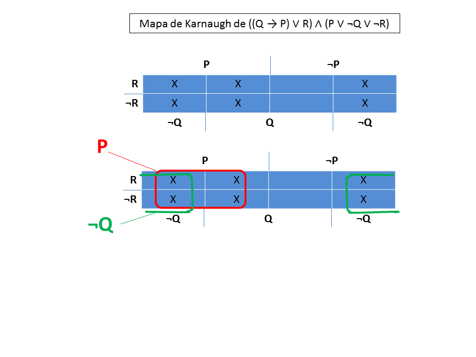

A pergunta 12 do teste T2012-1 pede para obter uma forma normal disjuntiva da expressão ((Q → P) ∨ R) ∧ (P ∨ ¬Q ∨ ¬R), com o mínimo de operadores possível.
A resolução pode ser obtida de várias maneiras.
Primeira forma:
Efetuar transformações de equivalência.
((Q → P) ∨ R) ∧ (P ∨ ¬Q ∨ ¬R) <=> (usando a forma disjuntiva da implicação, A → B <=> ¬A ∨ B )
( ¬Q ∨ P ∨ R) ∧ (P ∨ ¬Q ∨ ¬R) <=> (usando a propriedade distributiva, no sentido de pôr em evidência)
P ∨ ¬Q ∨ (R ∧ ¬R) <=> (usando o princípio da não contradição)
P ∨ ¬Q ∨ ⊥ <=> (usando o elemento neutro da disjunção)
P ∨ ¬Q
-------------------
Segunda forma:
Construindo a tabela de verdade da expressão ((Q → P) ∨ R) ∧ (P ∨ ¬Q ∨ ¬R) obtém-se
Para simplificar a expressão podemos preencher o mapa de Karnaugh para 3 variáveis (P, Q e R) colocando um X em cada célula que corresponda a T na coluna de resultado da tabela de verdade.

Depois de todos os X marcados, formam-se os grupos maiores possíveis de X adjacentes de forma a que o grupo tenha um número de X que seja uma potência de 2. Assim, forma-se o grupo a vermelho, com 4 X, a que corresponde a fórmula P, que é a variável comum a todos esses X. Entre esses 4 X existem Q e ¬Q e R e ¬R.
Depois de formar o grupo a vermelho, ainda sobram dois X por cobrir. Vamos obter o maior grupo de X que contém esses dois X. Uma margem exterior do mapa é vista como adjacente à que lhe é oposta. Portanto é possível formar o grupo verde, que ocorresponde a ¬Q.
Juntando os dois casos em que a a fórmula é verdadeira obtém-se a resposta: P ∨ ¬Q